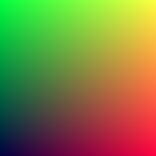
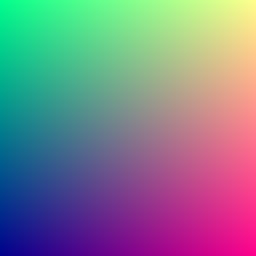
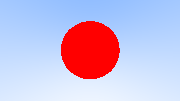
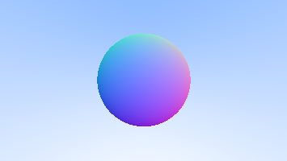
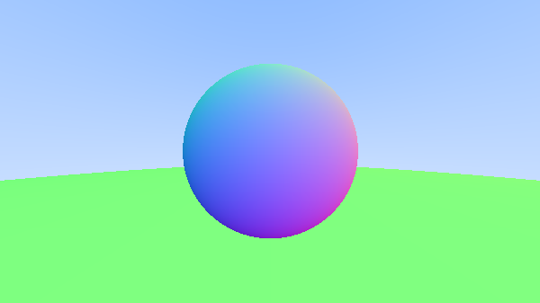
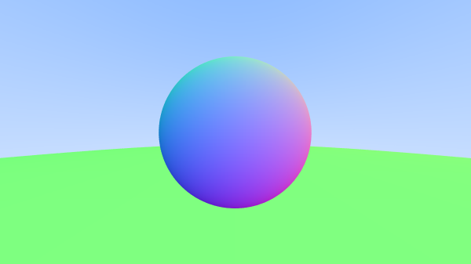

Ray Tracing
Notes on Ray Tracing in One Weekend
Table of Contents
1. Output An Image
1.1. PPM Image Format
Usually it details some sort of encoding - P3 being colors in ASCII.
Then new line followed by Num Cols space, Num Rows.
The next line is a single number detailing the scale (255 usually denotes max color).
Then R G B space separated values times the number of columns per row.
Then you have Num Rows rows to get you the final image.
1.1.1. Example
Source:
#include <iostream> using namespace std; int main() { const int image_width = 256; const int image_height = 256; cout << "P3" << endl << image_width << " " << image_height << endl << "255" << endl; for (int j = image_height - 1; j >= 0; --j) { for (int i = 0; i < image_width; ++i) { auto r = double(i) / (image_width - 1); auto g = double(j) / (image_height - 1); auto b = 0.25; int ir = static_cast<int>(255.999 * r); int ig = static_cast<int>(255.999 * g); int ib = static_cast<int>(255.999 * b); // for each pixel cout << ir << " " << ig << " " << ib << endl; } } }
Output:

2. Vec3 Class
A 3D vector class that's used for:
- Colors
- Locations
- Directions
- Offsets
- etc.
There will be two aliases created for vec3: point3 and color. This is just used to clarify intent and use.
2.1. Vec3.h
Code for Vec3: vec3.h
Note: This is just for showing. The code is stored as a file here.
#ifndef VEC3_H #define VEC3_H #include <iostream> class vec3 { public: vec3() : e{0, 0, 0} {} vec3(double e0, double e1, double e2) : e{e0, e1, e2} {} // getter methods double x() const {return e[0]} double y() const {return e[1]} double z() const {return e[2]} vec3 operator-() const { return vec3(-e[0], -e[1], -e[2]); } double operator[](int i) const {return e[i]; } double& operator[](int i) {return e[i]; } // adding vec3 operator+=(const vec3 &v) { for (int i = 0; i < 3; ++i) { e[i] += v.e[i]; } return *this; } // scalar multiplication vec3& operator*=(const double t) { for (int i = 0; i < 3; ++i) { e[i] *= t; } return *this; } // scalar division vec3& operator/=(const double t) { return *this *= 1/t; } double length() const { // return std::sqrt(length_squared()); return 1.0; } double length_squared() const { return e[0]*e[0] + e[1]*e[1] + e[2]*e[2]; } public: double e[3]; }; // Type aliases for vec3 using point3 = vec3; // used for 3D points using color = vec3; // used for RGB color // vec3 Utility Functions inline std::ostream& operator<<(std::ostream &out, const vec3 &v) { return out << v.e[0] << ' ' << v.e[1] << ' ' << v.e[2]; } inline vec3 operator+(const vec3 &u, const vec3 &v) { return vec3(u.e[0] + v.e[0], u.e[1] + v.e[1], u.e[2] + v.e[2]); } inline vec3 operator-(const vec3 &u, const vec3 &v) { return vec3(u.e[0] - v.e[0], u.e[1] - v.e[1], u.e[2] - v.e[2]); } inline vec3 operator*(const vec3 &u, const vec3 &v) { return vec3(u.e[0] * v.e[0], u.e[1] * v.e[1], u.e[2] * v.e[2]); } inline vec3 operator*(double t, const vec3 &v) { return vec3(t*v.e[0], t*v.e[1], t*v.e[2]); } inline vec3 operator*(const vec3 &v, double t) { return t * v; } inline vec3 operator/(vec3 v, double t) { return (1/t) * v; } inline double dot(const vec3 &u, const vec3 &v) { return u.e[0] * v.e[0] + u.e[1] * v.e[1] + u.e[2] * v.e[2]; } inline vec3 cross(const vec3 &u, const vec3 &v) { return vec3(u.e[1] * v.e[2] - u.e[2] * v.e[1], u.e[2] * v.e[0] - u.e[0] * v.e[2], u.e[0] * v.e[1] - u.e[1] * v.e[0]); } inline vec3 unit_vector(vec3 v) { return v / v.length(); } #endif
2.2. color.h
Code for Color Utility: color.h
Saved as a header here.
#ifndef COLOR_H #define COLOR_H #include "vec3.h" #include <iostream> void write_color(std::ostream &out, color pixel_color) { // Write the translated [0,255] value of each color component. out << static_cast<int>(255.999 * pixel_color.x()) << ' ' << static_cast<int>(255.999 * pixel_color.y()) << ' ' << static_cast<int>(255.999 * pixel_color.z()) << '\n'; } #endif
2.3. Revisiting Example 1.1.1
Update the old example but this time using the color class and using write_color. I also added
more blue hue to all the pixels.
Source:
#include "util/color.h" #include "util/vec3.h" #include <iostream> using namespace std; int main() { const int image_width = 256; const int image_height = 256; cout << "P3" << endl << image_width << " " << image_height << endl << "255" << endl; for (int j = image_height - 1; j >= 0; --j) { for (int i = 0; i < image_width; ++i) { color pixel(double(i) / (image_width - 1), double(j) / (image_height - 1), 0.85); write_color(std::cout, pixel); } } }
Output:

3. Rays
3.1. Ray Class
A ray is a function, \(P(t) = A + tb\), \(t \in \mathbb{R}\). A is the ray origin, and b is the ray vector.
#ifndef RAY_H #define RAY_H #include "vec3.h" class ray { public: ray() {} ray(const point3& origin, const vec3& direction) : orig(origin), dir(direction) {} point3 origin() const { return orig; } vec3 direction() const { return dir; } point3 at(double t) const { return orig + t*dir; } public: point3 orig; vec3 dir; }; #endif
3.2. Sending Rays into Scene
Its time to ray trace! The ray tracer sends rays through pixels and computes the color seen in the direction of those rays.
Here are the steps:
- Calculate the ray from the eye to the pixel.
- Determine which objects the ray intersects.
- Computer a color for that intersection point.
Some parameters we need:
- Aspect ratio
- Focal length This is the distance from the eye to the projection plane.?? IDK what this is, but its a plane in the back
- Eye/Camera This will be at the origin.
The y axis will be up, x axis to the right, and z axis moving backwards, because hand rules.
3.3. Example: Rendering a blue-to-white gradient, using Ray Tracing
Source
#include "util/color.h" #include "util/ray.h" #include "util/vec3.h" #include <iostream> // this function returns a color for which ray its on. color ray_color(const ray& r) { vec3 unit_direction = unit_vector(r.direction()); // this is to try and put the pixel in the center y auto t = 0.5 * (unit_direction.y() + 1.0); // the gradient color (blue-white) depends on where the // y-value sits. // higher y values -> more blue return t * color(0.5, 0.7, 1.0) + (1 - t) * color(1.0, 1.0, 1.0); } int main() { // image double aspect = 16.0 / 9.0; int height = 200; int width = static_cast<int>(height * aspect); // camera setup double viewport_height = 2.0; double viewport_width = viewport_height * aspect; double focal_length = 1.0; point3 origin(0.0, 0.0, 0.0); vec3 horizontal(viewport_width, 0.0, 0.0); vec3 vertical(0.0, viewport_height, 0.0); vec3 lower_left_corner = origin - horizontal / 2 - vertical / 2 - vec3(0.0, 0.0, focal_length); // Render std::cout << "P3\n" << width << " " << height << "\n255" << std::endl; // loop for (int j = height-1; j >= 0; --j) { // explanation: scans pixels L->R U->D for (int i = 0; i < width; ++i) { // i thus needs to be in the inner loop ray r(origin, vec3(double(i) * viewport_width / width, double(j) * viewport_height / height, 0.0) + lower_left_corner - origin); // color pixel = ray_color(r); // double u = double(i) / (width-1); // fraction of width // double v = double(j) / (height-1); // fraction of height // // why write origin here? well its because the origin may not always be [0, 0, 0] // ray r(origin, lower_left_corner + u * horizontal + v * vertical - origin); color pixel = ray_color(r); write_color(std::cout, pixel); } } }
Output
The resultant image is a gradient from blue to white. Notice that not only is there a
vertical gradient, but also a horizontal one.
To explain this, we look at the ray_color function:
color ray_color(const ray& r) { vec3 unit_direction = unit_vector(r.direction()); // transformation to make to from 0 to 1 auto t = 0.5 * (unit_direction.y() + 1.0); // the gradient color (blue-white) depends on where the // y-value sits. // higher y values -> more blue return t * color(0.5, 0.7, 1.0) + (1 - t) * color(1.0, 1.0, 1.0); }
Unit vector makes the direction component of the ray unit length. This means that when we take the y component of all of those rays, the rays closer to the fringes when normalized dont extend as far into the y direction (because of some of the length contributed to the other components of the vector). We can also guarantee that no y component of any normalised vector will be greater than \(\pm 1\). We perform a transformation on the y scale to get a t that is \(0 \leq t \leq 1\). When \(t = 1\), we get blue, and when \(t = 0\) we get white. As a result the following is produced.

4. Adding a sphere to the scene
Time to add an object to the ray tracer!
4.1. Hit detection
Recall the equation for a sphere with center \((C_x, C_y, C_z)\): \[ (x-C_x)^2 + (y-C_y)^2 + (z-C_z)^2 = r^2 \]
So to determine if a point \((a, b, c)\) is in a sphere, you would check if \[ (x-C_x)^2 + (y-C_y)^2 + (z-C_z)^2 < r^2 \]
4.1.1. Expressing as vectors
Now, \((x-C_x)^2 + (y-C_y)^2 + (z-C_z)^2\) is great and all but
we need it to be in the form of vectors for the vec3 class.
Claim: \((\textbf{P - C})\cdot(\textbf{P - C}) = (x-C_x)^2 + (y-C_y)^2 + (z-C_z)^2\),
where \(P\) is a point \((x, y, z)\), and \(C = (C_x, C_y, C_z)\)
is the center of the sphere.
Thus, \[(\textbf{P-C})\cdot(\textbf{P-C}) = r^2 \]
4.1.2. Detecting if rays hit sphere
The above equation only answers whether a point \(\textbf{P}\) is on the sphere. We want to know if a ray ever hits the sphere. To do this, we substitute \(\textbf{P}\) for \(\textbf{P}(t)=\textbf{A} + t\textbf{B}\), and find value \(t\) such that this equation holds:
\begin{align*} (\textbf{P}(t) - \textbf{C})\cdot(\textbf{P}(t) - \textbf{C}) &= r^2 \\ (\textbf{A}+t\textbf{b} - \textbf{C})\cdot (\textbf{A}+t\textbf{b} - \textbf{C}) &= r^2 \\ (t\textbf{b} + (\textbf{A} - \textbf{C})) \cdot (t\textbf{b} + (\textbf{A} - \textbf{C})) &= r^2 \\ t^2\textbf{b}*\textbf{b} + 2t\textbf{b}\cdot(\textbf{A-C}) + (\textbf{A-C})\cdot(\textbf{A-C}) - r^2 &= 0 \\ \end{align*}1 intersection means the ray touches the sphere once, 2 intersections means the ray passes through the sphere. These intersections can be found in this quadratic equation, but we are only concerned with whether the ray hits the sphere.
We have a handy quadratic equation to find roots: \[x = \frac{-b \pm \sqrt{b^2 - 4ac}}{2a} \]
If \(b^2 - 4ac\) is negative, then there are no roots. So, for the ray \(\textbf{P}(t) = \textbf{A} + t\textbf{b}\) to not intersect the shape,
\begin{align*} (2b\cdot(\textbf{A-C}))^2 - 4(\textbf{b} \cdot b)((\textbf{A-C}) \cdot (\textbf{A-C}) - r^2) < 0 \\ \end{align*}must hold true.
4.1.3. Example: Adding the shape to our gradient
We create a function called hit_sphere which given a sphere, returns whether
the ray hits the sphere.
For now, we color the rays that hit the sphere red in our final result.
Source
#include "util/color.h" #include "util/ray.h" #include "util/vec3.h" #include <iostream> // check if the ray intersects the sphere bool hit_sphere(const point3& center, double radius, const ray& ray) { vec3 org_min_c = ray.origin() - center; double a = dot(ray.direction(), ray.direction()); double b = dot(2*ray.direction(), org_min_c); double c = dot(org_min_c, org_min_c) - radius*radius; return b*b - 4*a*c >= 0; // i left it as geq 0 for now. } // this function returns a color for which ray its on. color ray_color(const ray& r) { if (hit_sphere(point3(0,0,-1), 0.5, r)) return color(1, 0, 0); // if hit sphere, then color it red. vec3 unit_direction = unit_vector(r.direction()); // this is to try and put the pixel in the center y auto t = 0.5 * (unit_direction.y() + 1.0); // the gradient color (blue-white) depends on where the // y-value sits. // higher y values -> more blue return t * color(0.5, 0.7, 1.0) + (1 - t) * color(1.0, 1.0, 1.0); } int main() { // image double aspect = 16.0 / 9.0; int height = 200; int width = static_cast<int>(height * aspect); // camera setup double viewport_height = 2.0; double viewport_width = viewport_height * aspect; double focal_length = 1.0; point3 origin(0.0, 0.0, 0.0); vec3 horizontal(viewport_width, 0.0, 0.0); vec3 vertical(0.0, viewport_height, 0.0); vec3 lower_left_corner = origin - horizontal / 2 - vertical / 2 - vec3(0.0, 0.0, focal_length); // Render std::cout << "P3\n" << width << " " << height << "\n255" << std::endl; // loop for (int j = height-1; j >= 0; --j) { // explanation: scans pixels L->R U->D for (int i = 0; i < width; ++i) { // i thus needs to be in the inner loop ray r(origin, vec3(double(i) * viewport_width / width, double(j) * viewport_height / height, 0.0) + lower_left_corner - origin); color pixel = ray_color(r); write_color(std::cout, pixel); } } }
Output:

4.2. Surface Normals
A surface normal is the vector that is perpendicular to the surface of the point of intersection. For a point \(\textbf{P}\) on the sphere with center \(\textbf{C}\), the normal vector would be \(\textbf{P} - \textbf{C}\). Convince yourself that this is true. We also normalize this vector so that each component is between -1 and 1.
4.2.1. Example: Visualizing The Normal
For now, we use a color map to visualize the normal. Since each vector is normalized, each component is between -1 and 1, which we can map to an interval from 0 to 1. Then, we map \(x \mapsto r\), \(y \mapsto g\), and \(z \mapsto b\).
Let us visualize this: Source
#include "util/color.h" #include "util/ray.h" #include "util/vec3.h" #include <iostream> // check if the ray intersects the sphere, if so, return the t value of the ray // that touches the sphere. double hit_sphere(const point3& center, double radius, const ray& ray) { vec3 org_min_c = ray.origin() - center; double a = dot(ray.direction(), ray.direction()); double b = dot(2*ray.direction(), org_min_c); double c = dot(org_min_c, org_min_c) - radius*radius; double discriminant = b*b - 4*a*c; if (discriminant < 0) { // why return -1? When is it -1? // means the object is behind the ray... return -1.0; } else { return (-b - sqrt(discriminant)) / (2.0 * a); } } // this function returns a color for which ray its on. color ray_color(const ray& r) { point3 sphere_center(0,0,-1); double t = hit_sphere(sphere_center, 0.5, r); if (t > 0.0) { // calculate the norm (P - C) vec3 norm = unit_vector(r.origin() + t * r.direction() - sphere_center); return 0.5 * (norm + vec3(1, 1, 1)); } vec3 unit_direction = unit_vector(r.direction()); // this is to try and put the pixel in the center y t = 0.5 * (unit_direction.y() + 1.0); // the gradient color (blue-white) depends on where the // y-value sits. // higher y values -> more blue return t * color(0.5, 0.7, 1.0) + (1 - t) * color(1.0, 1.0, 1.0); } int main() { // image double aspect = 16.0 / 9.0; int height = 200; int width = static_cast<int>(height * aspect); // camera setup double viewport_height = 2.0; double viewport_width = viewport_height * aspect; double focal_length = 1.0; point3 origin(0.0, 0.0, 0.0); vec3 horizontal(viewport_width, 0.0, 0.0); vec3 vertical(0.0, viewport_height, 0.0); vec3 lower_left_corner = origin - horizontal / 2 - vertical / 2 - vec3(0.0, 0.0, focal_length); // Render std::cout << "P3\n" << width << " " << height << "\n255" << std::endl; // loop for (int j = height-1; j >= 0; --j) { // explanation: scans pixels L->R U->D for (int i = 0; i < width; ++i) { // i thus needs to be in the inner loop ray r(origin, vec3(double(i) * viewport_width / width, double(j) * viewport_height / height, 0.0) + lower_left_corner - origin); color pixel = ray_color(r); write_color(std::cout, pixel); } } }
Output:

4.3. Simplifying the intersection code.
There is an extra 2 in the front of b in our equation. Suppose we then used \(b = 2h\) in our quadratic equation:
\begin{align*} \frac{-b \pm \sqrt{b^2 - 4ac}}{2a} \\ = \frac{-(2h) \pm \sqrt{(2h)^2 - 4ac}}{2a} \\ = \frac{-2h \pm \sqrt{4h^2 - 4ac}}{2a} \\ = \frac{-2h \pm 2\sqrt{h^2 - ac}}{2a} \\ = \frac{-h \pm \sqrt{h^2 - ac}}{a} \\ \end{align*}Now we use these changes in our code:
// check if the ray intersects the sphere, if so, return the t value of the ray // that touches the sphere. double hit_sphere(const point3& center, double radius, const ray& ray) { vec3 org_min_c = ray.origin() - center; double a = dot(ray.direction(), ray.direction()); double h_b = dot(ray.direction(), org_min_c); double c = dot(org_min_c, org_min_c) - radius*radius; double discriminant = h_b*h_b - a*c; if (discriminant < 0) { // why return -1? When is it -1? // means the object is behind the ray... return -1.0; } else { return (-h_b - sqrt(discriminant)) / a; } }
4.4. Abstraction to hittable objects
So what about several spheres? Or shapes? Let's generalize this problem into an abstract class. This generalized "surface" is anything that can be hit by rays.
struct hit_record { point3 point; // point of intersection vec3 norm; // resultant norm of the intersection double t; // t-value of ray to get to point. } class hittable { public: virtual bool hit(const ray& r, double t_min, double t_max, hit_record& rec) const = 0; }
So we use this general class to implmement a sphere.
class sphere : public hittable { public: sphere() {} sphere(point3 center, double r) : center(center), radius(r) {}; virtual bool hit(const ray& r, double t_min, double t_max, hit_record& rec) const override; public: point3 center; double radius; } bool sphere::hit(const ray&r, double t_min, double t_max, hit_record& rec) const { vec3 org_min_c = r.origin() - center; double a = dot(r.direction(), r.direction()); double h_b = dot(ray.direction(), org_min_c); double c = dot(org_min_c, org_min_c) - radius*radius; double discriminant = h_b*h_b - a*c; if (discriminant < 0) { return false; } else { double sqrtd = std::sqrt(discriminant); double root = (-h - sqrtd) / a; if (t_min > root || t_max < root) { root = (-h + sqrtd) / a; if (t_min > root || t_max < root) { return false; } } rec.t = root; rec.point = r.at(rec.t); rec.norm = unit_vector(rec.point - center); // this will always be radius return true; } }
4.4.1. Front Faces vs Back Faces
In the code above, the normal always points outwards from the center of the sphere, even if the ray intersects the sphere from the inside.
From the book, it says that we need to know which side the ray is on when we color the sphere. If we choose to always have the normal on the outside, then we will need to do a dot product to check the side.
If we always decide to return the normal against the direction of the ray, then we will also need to provide information on whether the ray is inside or outside.
In terms of which method to choose, the second one determines the side at geometry intersection, whereas the first one determines at time of coloring. As the book says, it is a matter of preference but because this book has more material types than geometry types they have decided to put the determination at geometry intersection time, to save work.
Let us update the appropriate sections of code:
First, we need to add an extra member to the hit_record struct, to store side information.
struct hit_record { point3 point; vec3 norm; double t; bool front_face; // confusing as to why its called front inline void set_face_normal(const ray& r, const vec3& out_norm) { front_face = dot_product(r.direction(), out_norm) < 0; norm = front_face ? out_norm : -out_norm; } }
How does this affect our sphere implementation?
bool sphere::hit(const ray&r, double t_min, double t_max, hit_record& rec) const { ve org_min_c = r.origin() - center; double a = dot(r.direction(), r.direction()); double h_b = dot(ray.direction(), org_min_c); double c = dot(org_min_c, org_min_c) - radius*radius; double discriminant = h_b*h_b - a*c; if (discriminant < 0) { return false; } else { double sqrtd = std::sqrt(discriminant); double root = (-h - sqrtd) / a; if (t_min > root || t_max < root) { root = (-h + sqrtd) / a; if (t_min > root || t_max < root) { return false; } } rec.t = root; rec.point = r.at(rec.t); // rec.norm = unit_vector(rec.point - center); // this will always be radius rec.set_face_normal(r, unit_vector(rec.point - center)); return true; } }
The sphere implmentation can be found here.
4.4.2. A List of Hittable Objects
With a generic object like hittable, we can make a class to store all the hittables! Now, we can do hit detection on a collection of objects.
The file can be found here.
class hittable_list { public: hittable_list() {} hittable_list(shared_ptr<hittable> object) {add(object);} void clear() { objects.clear(); } void add(shared_ptr<hittable> object) { objects.push_back(object); } virtual bool hit(const ray& r, double t_min, double t_max, hit_record& rec) const override; public: vector<shared_ptr<hittable>> objects; }; bool hittable_list::hit(const ray& r, double t_min, double t_max, hit_record& rec) const { // probably want to distinguish between objects in front or behind hit_record rec_temp; bool is_hit = false; double closest_hit = t_max; for(const auto &obj : objects) { if (obj->hit(r, t_min, closest_hit, rec_temp)) { is_hit = true; closest_hit = rec.t; rec = rec_temp; } } return is_hit; };
4.4.3. Wrapping Up With a Revised Example
Returning to the previous example, we re-write the program, now with another sphere in the world, with radius 100 and centered around \((0, -100.5, -1)\).
The header file rtweekend has some useful constants like
infinity and pi, and a function for converting
degrees to radians.
/Note to Self: Remember to add semicolons to the end of your class/struct declarations, as the errors that arise (Expected unqualified id) are not very helpful./
Source:
#include "util/rtweekend.h" #include "util/color.h" #include "util/hittable.h" #include "util/hittable_list.h" #include "util/sphere.h" #include <iostream> // give it a ray and an object and it'll tell you what to color it color ray_color(const ray& r, const hittable& world) { hit_record rec; if (world.hit(r, 0, infinity, rec)) { // if hit, return a color map return 0.5 * (rec.norm + vec3(1, 1, 1)); } // otherwise, return sky gradient double blue_portion = 0.5 * (unit_vector(r.direction()).y() + 1.0); return blue_portion * color(0.5, 0.7, 1.0) + (1 - blue_portion) * color(1, 1, 1); } int main() { // set up width and height double aspect = 16.0/9.0; int img_width = 600; int img_height = static_cast<int>(img_width / aspect); // set up camera double vp_height = 2.0; // we choose height here because height is known double vp_width = vp_height * aspect; double focal_length = 1.0; // useful parameters point3 origin(0, 0, 0); vec3 horizontal(vp_width, 0, 0); vec3 vertical(0, vp_height, 0); vec3 lower_left = origin - horizontal / 2 - vertical / 2 - vec3(0, 0, focal_length); // set up the world hittable_list world; world.add(make_shared<sphere>(point3(0, 0, -1), 0.5)); world.add(make_shared<sphere>(point3(0, -100.5, -1), 100)); // render time std::cout << "P3\n" << img_width << " " << img_height << "\n255\n"; for (int j = img_height-1; j >= 0; --j) { for (int i = 0; i < img_width; ++i) { ray r(origin, lower_left + vertical * (double(j) / img_height) + horizontal * (double(i) / img_width) - origin); write_color(std::cout, ray_color(r, world)); } } }
Output: In the camera view, we see the original sphere as well as the gradient in the back where no rays intersected any object. The green curvature is the top of the massive sphere with radius 100, and it is green due to how our colormap was designed: (normal with big positive y component \(\implies\) larger green value.)

5. Antialiasing
Notice the jagged lines of the smooth surface of the sphere. This is aliasing. To get rid of this effect, we can average a bunch of pixels around the area to make it look smoother. The book says that we will not bother with stratification, but this may be something that I might look into later. The argument offered as to why we will not implement stratification is because our ray-tracer will not benefit much from this and makes the code much more complex.
To begin, we start with some more abstractions.
5.1. Random Number Generation
We need some helper functions to generate random doubles. First, we create one that can generate a double in the range \([0, 1)\), with the help of cstdlib.
#include <cstdlib> inline double random_double() { // Returns a random real in [0,1). return rand() / (RAND_MAX + 1.0); }
Then, let's extend this to create a function that gives a random double in a range:
inline double random_double(double min, double max) { return min + (max - min) * random_double(); }
These will be added to our rtweekend.h header file.
5.2. Abstracting the Camera
Given a pixel we have several samples and send rays through each of the samples. The colors are then averaged. Let's create a camera class to manage the virtual camera and screen sampling. The camera has:
- Aspect Ratio
- viewport width/height
- focal length
and some useful constants, like
vec3horizontal [viewportwidth, 0, 0]vec3vertical [0, viewportheight, 0]vec3botleft \(\leftarrow\) origin - horizontal / 2 - vertical / 2 - [0, 0, -focallength]
Some functions that the camera has might be the get_ray function that returns a ray for a cartesian
coordinate given.
The header file can be found here.
class camera { public: camera() { double aspect = 16.0 / 9.0; double vp_height = 2.0; double vp_width = vp_height * aspect; double focal_length = 1.0; origin = vec3(0, 0, 0); horizontal = vec3(vp_width, 0, 0); vertical = vec3(0, vp_height, 0); lower_left = origin - horizontal / 2 - vertical / 2 - vec3(0, 0, focal_length); } ray get_ray(double u, double v) const { return ray(origin, lower_left + horizontal * u + vertical * v - origin); } public: vec3 origin; vec3 horizontal; vec3 vertical; vec3 lower_left; };
Now to handle multi-sampled coloring, we must modify the coloring function in color.h:
void write_color(std::ostream &out, color pixel_color) { // Write the translated [0,255] value of each color component. out << static_cast<int>(255.999 * pixel_color.x()) << ' ' << static_cast<int>(255.999 * pixel_color.y()) << ' ' << static_cast<int>(255.999 * pixel_color.z()) << '\n'; } void write_color_aa(std::ostream &out, color pixel_color, int samples_per_pixel) { // get pixel color. double r = pixel_color.x(); double g = pixel_color.y(); double b = pixel_color.z(); // divide by samples per px r /= samples_per_pixel; g /= samples_per_pixel; b /= samples_per_pixel; // Write the translated [0,255] value of each color component. out << static_cast<int>(256 * clamp(r, 0, 0.999)) << ' ' << static_cast<int>(256 * clamp(g, 0, 0.999)) << ' ' << static_cast<int>(256 * clamp(b, 0, 0.999)) << '\n'; }
Why use clamp instead of multiplying it by 255.999? I guess it ensures for sure that the r, g, and b component will be between 0 and 255 (truncated, inclusive). Now it's time to adapt this change to our main function.
Source:
#include "util/rtweekend.h" #include "util/color.h" #include "util/hittable.h" #include "util/hittable_list.h" #include "util/sphere.h" #include "util/camera.h" #include <iostream> // give it a ray and an object and it'll tell you what to color it color ray_color(const ray& r, const hittable& world) { hit_record rec; if (world.hit(r, 0, infinity, rec)) { // if hit, return a color map return 0.5 * (rec.norm + vec3(1, 1, 1)); } // otherwise, return sky gradient double blue_portion = 0.5 * (unit_vector(r.direction()).y() + 1.0); return blue_portion * color(0.5, 0.7, 1.0) + (1 - blue_portion) * color(1, 1, 1); } int main() { // Image double aspect = 16.0 / 9.0; double img_width = 600; double img_height = static_cast<int>(img_width / aspect); int samples_per_px = 100; // world hittable_list world; world.add(make_shared<sphere>(point3(0, 0, -1), 0.5)); world.add(make_shared<sphere>(point3(0, -100.5, -1), 100)); // camera camera cam; // render std::cout << "P3\n" << img_width << " " << img_height << "\n255\n"; for (int j=img_height - 1; j >= 0; --j) { for (int i = 0; i < img_width; ++i) { // do stuff color temp(0, 0, 0); for (int s = 0; s < samples_per_px; ++s) { // only sample [0, 1) + pixel. If that pixel is half hit half not, then it is blurred. double u = (i + random_double()) / (img_width - 1); double v = (j + random_double()) / (img_height - 1); temp += ray_color(cam.get_ray(u, v), world); } write_color_aa(std::cout, temp, samples_per_px); } } }
OUTPUT:
The result is a much smoother sphere, with no jagged lines.
| Before | After |
|  100 samples | |
 1000 samples 1000 samples |